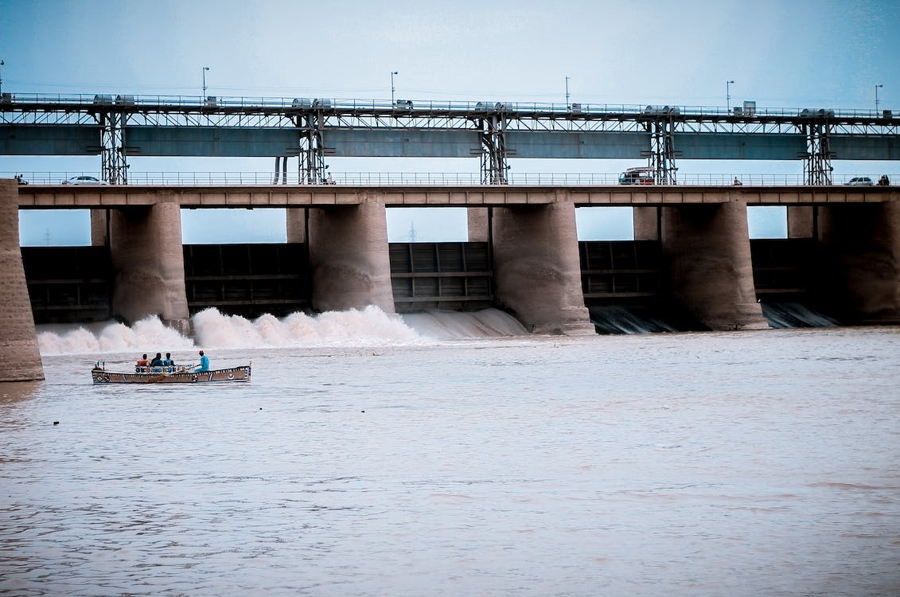
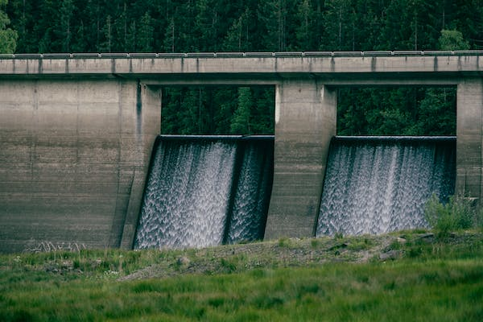

A energia hidrelétrica é uma das principais fontes de energia utilizadas no mundo. Ela é considerada uma fonte de energia limpa e renovável, pois não emite gases poluentes ou gases de efeito estufa. Além disso, sua matéria-prima é a água, recurso abundante na natureza.
Apesar de parecer uma forma de energia limpa e sustentável, a construção de usinas hidrelétricas pode ter graves consequências para o meio ambiente e para as comunidades locais. A inundação de grandes áreas para formar o reservatório pode levar ao desmatamento de áreas florestais, ao deslocamento de comunidades ribeirinhas e à perda de biodiversidade.
Além disso, a construção das usinas pode alterar o regime de vazão dos rios, causando impactos negativos na fauna e flora aquáticas e afetando a navegação e o uso de recursos hídricos pelas comunidades locais. A produção de energia hidrelétrica também pode ter um impacto significativo na qualidade da água, com a emissão de gases do efeito estufa durante a decomposição da matéria orgânica submersa e a alteração da temperatura e composição química da água.
Portanto, é importante avaliar cuidadosamente os impactos ambientais e sociais da construção de usinas hidrelétricas e buscar alternativas mais sustentáveis para a geração de energia.